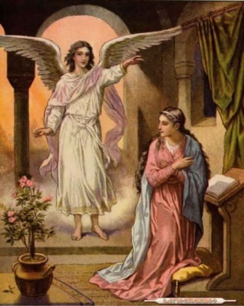
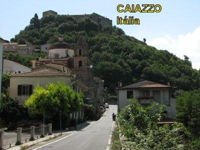

“Adoração”
é exclusivamente reservada a DEUS.
“Adoração”
é exclusivamente reservada a DEUS.
ADMIRÁVEL INTERCESSOR
A Igreja procura dar um culto
especial aos Anjos, e no caso presente, ao Arcanjo São Gabriel, dando-lhe um
culto que chamamos de
“Veneração”, porque a
“Adoração”
é exclusivamente reservada a DEUS.
Esta consideração é importante e nos conduz a compreender, que devemos exercitar e cultivar uma carinhosa atenção de “Veneração” ao “Arcanjo São Gabriel” e ao nosso “Anjo da Guarda”. Ao “Anjo Custódio” , pela eterna companhia, pela real proteção que muitas vezes nem percebemos, e pela luminosa inspiração que nos concede ao longo da nossa existência. E por outro lado, prestar ao Arcanjo São Gabriel, um culto de veneração especial, é reconhecer as suas qualidades luminosas, o seu valor incontestável, digno da nossa admiração e simpatia. Por isso mesmo, tributar-lhe uma veneração fraterna, realizada com sincero amor e devoção, como filhos de DEUS que todos nós somos, resultará num admirável acontecimento que na continuidade, se revelará recíproco, porque o Arcanjo autorizado por DEUS, também irá auxiliar efetivamente aos seus devotos, numa intensidade surpreendente e repleta de amizade, mostrando que de fato, Ele é um precioso e admirável intercessor junto a DEUS.
Os Anjos e Arcanjos, com toda a sua Hierarquia Angélica foram idealizados e criados por DEUS, e são criaturas do SENHOR, que tem a missão de sempre servir ao CRIADOR e também, ajudar efetivamente na Obra de Redenção da humanidade de todas as gerações.
Eles devem ser venerados, e particularmente, a Igreja recomenda que cada pessoa procure principalmente, ser amiga do seu Anjo da Guarda, também chamado Anjo Custódio. Às vezes o conjunto das atividades no cotidiano impede as pessoas de observar a si mesmo, e de perceber vários e vários acontecimentos ao longo do dia, que trazem um resultado feliz e as vezes até surpreendente, que eles não entendem como aconteceram! São manifestações angélicas, claras e evidentes na nossa existência, que atestam a presença do Anjo da Guarda em nossa vida. Façam um teste e observem os seus passos durante o dia... Se estiveres bem intencionado ficarás impressionado com o que irá observar.
Isto é um convite concreto e nos conduz também a compreender a necessidade de rezarmos para o nosso Anjo da Guarda e também para o poderoso Arcanjo São Gabriel, suplicando a intercessão junto a DEUS, para que “eles” consigam do SENHOR, as graças necessárias a nossa vida, ou para ser vencida alguma séria dificuldade que as vezes ocorre na existência de uma pessoa.
OS ANJOS QUEREM QUE SEJAMOS EVANGELIZADORES
Por outro lado, sendo Gabriel Arcanjo o anunciador da Boa Nova da Salvação, de certa maneira ele se une ao chamado da Igreja e convida a todos nós, para evangelizar "em todos os momentos e em todos os lugares, divulgando a nossa fé no SENHOR JESUS, de modo que ela possa ir se espalhando em todos os países do mundo, para a maior honra e glória do SENHOR DEUS."
Como patrono das telecomunicações e protetor da tecnologia audiovisual o Arcanjo São Gabriel estimulará a nossa iniciativa e nos ajudará na propagação da fé, assim como da mensagem Divina da Boa Nova.
A TRADIÇÃO CRISTàSOBRE SÃO GABRIEL

Quem mais poderia ser o mensageiro desta boa notícia, se não o Arcanjo São Gabriel, aquele que trouxe a mensagem a MARIA?
Depois de anunciar a alegre mensagem aos pastores, o Arcanjo é cercado imediatamente por uma multidão do exército celeste, louvando a DEUS, dizendo: "Glória a Deus nas alturas e paz na terra aos homens que ELE ama!" (Lc 2, 14)
Todavia os deveres de Gabriel em relação ao Messias não acabaram com o nascimento de JESUS. Gabriel foi provavelmente o Anjo que apareceu em sonho a José, pela primeira vez em Nazaré. Tudo aconteceu assim: MARIA com o consentimento dos seus pais e de José, foi a Ain Karin, perto de Jerusalém, acompanhar e ajudar a sua prima Isabel nos últimos meses da gravidez. Quando retornou a Nazaré, a sua também Divina gravidez começou a aparecer. Para os seus pais e parentes o fato já se constituía em grande alegria, pois preanunciava o futuro nascimento de mais um membro da família. Mas, para José, o seu noivo, se transformou em uma grande preocupação, porque Ela havia feito o Voto de Virgindade perpétua. E agora, como justificar aquele acontecimento sem a participação dele? José, não querendo difamá-la, decidiu repudiá-la em silêncio. Dormiu preocupado. “Enquanto assim decidia, eis que o Anjo do SENHOR manifestou-se a ele em sonho, dizendo: José, filho de Davi, não temas receber MARIA, tua mulher, pois o que Nela foi gerado vem do ESPÍRITO SANTO. Ela dará à luz um FILHO e tu o chamarás com o nome de JESUS, pois ELE salvará o seu povo dos seus pecados”. (MT 1, 20); Com certeza, este Anjo, era o Arcanjo Gabriel que estava ligado a Sagrada Família de Nazaré, pela suprema Vontade de DEUS. Numa segunda vez, o Arcanjo apareceu a José em Belém, quando lhe avisou dizendo: "Levanta-te, toma o Menino e a Mãe e foge para o Egito. Fica lá até que eu te avise, porque Herodes vai procurar o Menino para matá-lo." (MT 2, 13)
Após a morte de Herodes, o Anjo apareceu
novamente a José no Egito para lhe dizer que podia voltar com o Menino e sua Mãe para
a terra de Israel. E com a mesma observação, Gabriel que é "a força de DEUS",
incontestavelmente foi o Anjo que São Lucas menciona no seu relato da agonia de
CRISTO no jardim do Getsêmani: "
Apareceu-LHE um Anjo do Céu que O confortava."
(Lc 22, 43) Então é bastante apropriado que o Anjo que tinha anunciado a vinda do SENHOR,
fazendo citações no Antigo e no Novo Testamento; que testemunhou toda a agonia de CRISTO
ao longo da Paixão do SENHOR, sem dúvida, deve ser também, o primeiro Anjo a anunciar
ao mundo a Ressurreição que verdadeiramente ocorreu, com o triunfo de JESUS sobre o pecado
e a morte, na manhã do dia da Páscoa:
“... o anjo do SENHOR, descendo do Céu e aproximando-se, removeu a pedra
(que fechava o sepulcro) e sentou-se sobre ela. O seu aspecto era como o do relâmpago,
e a sua roupa, alva como a neve." (Mt
28, 2-3)
observação, Gabriel que é "a força de DEUS",
incontestavelmente foi o Anjo que São Lucas menciona no seu relato da agonia de
CRISTO no jardim do Getsêmani: "
Apareceu-LHE um Anjo do Céu que O confortava."
(Lc 22, 43) Então é bastante apropriado que o Anjo que tinha anunciado a vinda do SENHOR,
fazendo citações no Antigo e no Novo Testamento; que testemunhou toda a agonia de CRISTO
ao longo da Paixão do SENHOR, sem dúvida, deve ser também, o primeiro Anjo a anunciar
ao mundo a Ressurreição que verdadeiramente ocorreu, com o triunfo de JESUS sobre o pecado
e a morte, na manhã do dia da Páscoa:
“... o anjo do SENHOR, descendo do Céu e aproximando-se, removeu a pedra
(que fechava o sepulcro) e sentou-se sobre ela. O seu aspecto era como o do relâmpago,
e a sua roupa, alva como a neve." (Mt
28, 2-3)
Por outro lado, é muito provável que São Paulo estava se referindo ao Arcanjo Gabriel, quando falava da segunda vinda de CRISTO no “fim do mundo” , ocasião em que a Batalha de São Miguel Arcanjo contra Satanás terminará, e quando não haverá mais necessidade dos remédios físicos e espirituais de São Rafael Arcanjo. Parece que dos três Arcanjos conhecidos por nós, São Gabriel é o único que tem uma voz forte e poderosa para “chamar a vida e a morte” ao julgamento final: "Quando o SENHOR, ao sinal dado, à voz do Arcanjo e ao som da trombeta Divina, descer do Céu, então os mortos em CRISTO ressuscitarão primeiro." (1 Ts 4, 16)
A voz do Arcanjo e ao som da trombeta de DEUS parece ser a mesma coisa, com a finalidade de transmitir a Ordem Divina para os mortos ressurgir. O Arcanjo Gabriel, que favoreceu a longa permanência da vida do homem sobre a Terra, prepara o homem para obra da Redenção através do Messias, porque a ressurreição dos "mortos que estão em CRISTO" não é uma consequência, mas é a colheita dos frutos da Redenção.
LINDA HISTÓRIA
A italiana Teresa Musco, que morreu
em 1976, bastante jovem, com a idade de 33 anos, foi admiravelmente protegida pelos
espíritos celestes e, particularmente, pelo 
Todavia, a Providência Divina decidiu ajudar a menina, que tinha um espírito meigo e bondoso, sobretudo gostava de rezar, quando o tempo lhe favorecia. A MÃE DE DEUS decidiu protegê-la e lhe estimular uma santa existência. Teresa descreve encontros com NOSSA SENHORA. "Posso dizer que, a partir dos seis anos de idade, eu estava cercada por um carinho todo especial da Mama Celeste. Na verdade ELA estava comigo quando me reorganizava, quando eu orava e mesmo quando brincava, eu sentia a presença DELA me chamar para conversar. Quando eu não fazia as coisas certas ELA estava sempre próxima, e maternalmente me corrigia; para mim era um conforto e uma proteção. ELA me repetia sempre:” “Ofereça os teus sofrimentos pelos pecadores”.
Quando seu pai adoeceu, a situação familiar tornou-se crítica: o pouco dinheiro que sua mãe ganhava, fazendo pequenos trabalhos aqui e ali, não era suficiente para alimentar a casa. Um dia, quando todos estavam indispostos devido a uma epidemia de gripe, a menina confessou o seu sofrimento à VIRGEM MARIA. Imediatamente, ela viu uma luz brilhante: "Um Anjo bonito, muito bonito", sua luz era tão brilhante que ela não podia permanecer por longo tempo olhando para ele. O Anjo então disse: "Cara Teresa, a Mãe Celestial pediu-me para lhe dar esse dinheiro. Você pode comprar provisões de alimentos para a semana, mas você não diz como o recebeu, este será o seu segredo... Eu retornarei. Eu ti recomendo rezar e oferecer a DEUS tudo o que te acontecer. Eu sou o Arcanjo Gabriel."
Alegremente, Teresa levou para a sua mãe o dinheiro que recebeu do Anjo mandado por NOSSA SENHORA, dizendo-lhe que uma senhora desconhecida havia lhe dado. Mas o pai, ignorante e maldoso como sempre, tratou a filha como mentirosa e ladra. E para puni-la, mandou que ela fosse vender no mercado de alimentos e plantas silvestres, as plantinhas selvagens que ela conseguisse colher nos campos, como por exemplo: orégano, erva-doce, chicória. Certo dia a menina de constituição magra e frágil, enfrentando as ladeiras das encostas dos morros, levando a pesada cesta com tudo o que conseguiu colher, sentiu-se envolvida por uma maravilhosa luz, porque o Arcanjo Gabriel chegou para ajudá-la.
Em outra ocasião,
a família se encontrava em extrema necessidade, não tinha nada para comer.
Teresa ocultamente em seu pequeno quarto rezou e chorando, suplicou a ajuda de NOSSA SENHORA. A VIRGEM MARIA colocou definitivamente o
Arcanjo Gabriel para protegê-la e ajudá-la. O Arcanjo apareceu e lhe disse:
“Teresa, aqui está o que JESUS envia a você: ELE quer que você
esteja em paz, JESUS está cansado de tantos pecados, e busca as almas que
aceitam se sacrificar pelos pecadores e pelas almas do Purgatório. Você vai
sofrer muito, mas nada tenha a temer, porque a MÃE DO CÉU está com você, ELA
nunca vai deixá-la sozinha, sempre estará perto de você para guiá-la e segui-la,
ELA vai lhe encorajar nos momentos mais difíceis".
suplicou a ajuda de NOSSA SENHORA. A VIRGEM MARIA colocou definitivamente o
Arcanjo Gabriel para protegê-la e ajudá-la. O Arcanjo apareceu e lhe disse:
“Teresa, aqui está o que JESUS envia a você: ELE quer que você
esteja em paz, JESUS está cansado de tantos pecados, e busca as almas que
aceitam se sacrificar pelos pecadores e pelas almas do Purgatório. Você vai
sofrer muito, mas nada tenha a temer, porque a MÃE DO CÉU está com você, ELA
nunca vai deixá-la sozinha, sempre estará perto de você para guiá-la e segui-la,
ELA vai lhe encorajar nos momentos mais difíceis".
Em seguida, lhe deu uma garrafa de óleo e todos os tipos de frutas que trouxe em sua longa túnica branca, e lhe indicou, perto da porta da frente, uma cesta cheia de alimentos: batata, farinha, massas, e três libras de carne, o que “por certo”, vai ocasionar repreensões e abusos a menina, por parte do seu ignorante pai! De acordo com o que o Arcanjo lhe havia falado, ela tinha que aprender a sofrer em silêncio e oferecer a DEUS a sua prova de fidelidade.
No dia 31 de maio de 1951, o Arcanjo São Gabriel, lhe trouxe um bonito e precioso ensinamento "palavra por palavra", de uma linda oração de consagração, a qual ela deverá renovar todos os dias até a sua morte. Esta é a oração:
"Ó DEUS! Deixe-me estar constantemente em TUAS MÃOS, e que o meu coração, o meu corpo e a minha alma estejam sempre entre os SAGRADOS CORAÇÕES DE JESUS E DE MARIA. JESUS querido, eu TE ofereço a minha alma para píxide (teca = pequeno depósito de metal que guarda a Hóstia Consagrada) ,TE ofereço o meu corpo para Ostensório (=Custódia onde se expõe a Hóstia Consagrada).Que os meus suspiros TE sejam um incenso agradável, que os meus pensamentos sejam para TI adorar, que os meus afetos me consomem como lâmpadas acesas diante de TI, e que a minha alma se erga sempre em direção ao TEU SAGRADO CORAÇÃO”!
 “Ó meu JESUS, eu TE
amo, duplica o meu amor! Eu acredito em TI, faça crescer cada dia a minha fé! De
TI espero tudo, ó meu DEUS: confirme a minha esperança! Faze em nome do caminho
doloroso que TU realizaste por mim até o Calvário, por todos os passos que TU
percorreste por mim! Faze em nome de todos os batimentos do TEU tão amoroso e
carinhoso CORAÇÃO, em nome dos sofrimentos abomináveis da TUA Paixão, por causa
das lágrimas de MARIA, TUA MÃE SANTÍSSIMA. Ó JESUS querido, sem TI os dias não
param de fluírem, as horas são como trevas: Vem, JESUS, e fique no meu coração,
não me deixe. Sem TI, sou incapaz de lutar e não posso viver, porque só a
esperança de revê-LO me deixa um vislumbre do Paraíso Eterno".
“Ó meu JESUS, eu TE
amo, duplica o meu amor! Eu acredito em TI, faça crescer cada dia a minha fé! De
TI espero tudo, ó meu DEUS: confirme a minha esperança! Faze em nome do caminho
doloroso que TU realizaste por mim até o Calvário, por todos os passos que TU
percorreste por mim! Faze em nome de todos os batimentos do TEU tão amoroso e
carinhoso CORAÇÃO, em nome dos sofrimentos abomináveis da TUA Paixão, por causa
das lágrimas de MARIA, TUA MÃE SANTÍSSIMA. Ó JESUS querido, sem TI os dias não
param de fluírem, as horas são como trevas: Vem, JESUS, e fique no meu coração,
não me deixe. Sem TI, sou incapaz de lutar e não posso viver, porque só a
esperança de revê-LO me deixa um vislumbre do Paraíso Eterno".
Esta oração irá sustentá-la na forma de expiação que é a sua vocação como uma alma vítima, e mais de uma vez, o Arcanjo Gabriel voltou para incentivá-la. No dia 20 de Setembro seguinte, quando ela estava no hospital, o Arcanjo lhe apareceu como "um Anjo com asas de prata e de olhos brilhantes como as estrelas", e a consolou. Para não impressionar demasiadamente a pequena menina doente com o seu esplendor, ele tomou a forma mais suave, sem brilho excessivo.
No dia 5 de Novembro de 1960, ela está com dezessete anos de idade, o Arcanjo ordena que em nome de NOSSA SENHORA, ela deixasse a casa paterna. Que não se preocupasse com as suas próprias necessidades,“pois ela não era a serva da MÃE CELESTE?”
No dia 20 de setembro de 1964, o Arcanjo Gabriel lhe apresentou uma cruz de ouro decorada com esmeraldas, em seguida, lhe mostrou também uma cruz simples. Ela ajoelhou e ficou com a cruz simples.
No dia 30 de setembro de 1971, ele se comunicou com ela, porque, estando doente, ela não pode comparecer à Santa Missa.
No dia 01 de dezembro do mesmo ano, ele a preparou para a estigmação, apresentando-lhe um cálice ornamentado com pérolas e lhe disse: "Eu vim recolher as gotas do seu sangue para apresentá-las ao PAI ETERNO". Muitas vezes sério, mas sempre diligente e cuidadoso, transbordava de solicitude, ele a acompanhará até a sua morte, que ocorreu no dia 19 de agosto de 1976, depois de um último êxtase, que marcou o fim dos seus atrozes meses de sofrimento físico e espiritual - a noite da alma -, depois chegou ao Paraíso, àquele que ela aspirava com toda a energia do seu ser.
Sobre ela, o Padre Roschini famoso teólogo escreveu um grande livro onde encontramos a seguinte observação: "Já tive a oportunidade de ler e pesquisar incontáveis biografias de almas santas. No entanto, nenhuma pode comparar com a vida e com os fenômenos extraordinários de Teresa Musco. Eles guardam uma impressionante maioria de fenômenos místicos complexos, jamais visto em todos os tempos e lugares".
GABRIEL O ARCANJO DA VERDADE
(Pequena Fantasia)
No dia em que DEUS decidiu criar a humanidade, começando por Adão, e estava para soprar na sua boca a fim de ativar a respiração, e depois, o beijando para ele ter vida, chamou todos os Anjos que havia criado. Eles vieram e se colocaram na frente do SENHOR, organizados numa longa fila, dispostos pela hierárquica, começando pelos Querubins até os Anjos mais humildes. E conversando com o SENHOR DEUS revelaram opiniões divergentes. Um deles disse: "Certamente, o SENHOR deve criá-lo”(Adão).No entanto, outros Anjos disseram com a mesma segurança: "Não, não faça isso Meu DEUS, o SENHOR vai se arrepender. Não crie a humanidade”. Outro Anjo exclamou:"Lembre-se das palavras que serão faladas e cantadas em sua honra, ó SENHOR DEUS: Graça e verdade se encontrarão, a justiça e a paz se abraçarão". Então o Anjo da Justiça falou:"DEUS criai-os sim, porque eles vão aprender a viver retamente e a praticar a caridade”. Mas o Anjo da Paz com muito respeito e educação discordou, dizendo: "SENHOR, não deve criá-los, porque os humanos vão brigar e lutar entre si, tentando um destruir o outro, juntamente com tudo que o SENHOR tiver criado e amado”.
Então o Anjo da Graça pediu licença, aproximou-se do SENHOR e disse: "Lembre-se ó DEUS, da tua imensa misericórdia e crie a humanidade, porque com certeza, na continuidade, eles vão TE imitar com gestos de bondade e ternura". O Anjo da Verdade foi o último a falar. Mais decidido do que os outros, ele disse:"Ó DEUS, não deve criar os homens, o SENHOR sabe tudo o que vai acontecer! Eles vão mentir e enganar, e serão desonestos, até mesmo vão usar o Seu Santo Nome para validar as suas desonestidades. SENHOR, que o TEU Santo Nome seja respeitado e abençoado para sempre”.
O SENHOR ouviu tudo e em resposta, agarrou o Anjo da Verdade e o enviou para a Terra. Os Anjos ficaram surpreendidos com aquela cena e cheios de admiração e amargura, gritaram: "Ó DEUS, o SENHOR despreza tanto o Anjo da Verdade? Ele é que é o TEU Selo e a fonte das TUAS palavras, e queres enviá-lo ao exílio e afastá-lo da TUA presença? Por tua bondade SENHOR, retire TUA palavra e permita que ele erga novamente e retorne da Terra. Lembre-se do que está escrito:”"E a Verdade se levantará da Terra".
Os sábios dizem que é a obrigação de cada um de nós, que fomos criados por AQUELE que é SANTO, levantar a Verdade e se certificar de que ela é elevada da Terra ao Céu, porque assim, você estará na presença de DEUS, e isto é o que DEUS espera de cada um de nós, sermos Santos para DEUS. E ser Santo para DEUS é ser sincero, é ter vida honesta para honrar a DEUS em palavras, em atos e ações e, nos fatos cotidianos, na liturgia e na maneira como vivemos. A Verdade nos foi dada para podermos retornar a DEUS. Bendito seja o TEU Nome Santo.
O que significa esta pequena história? Significa dizer que o Arcanjo São Gabriel, foi Aquele com permissão do SENHOR, que mais entrou em contato com a humanidade, e representa um “elo forte” , um “intercessor poderoso” diante do próprio DEUS, a quem podemos e devemos procurar com as nossas orações de súplica, pedindo-lhe que alcance de NOSSO SENHOR, as graças que necessitamos para a nossa vida. O Arcanjo São Gabriel, é o Arcanjo da Verdade.
INSPIRAÇÃO ANGÉLICA
(Fato Verídico)
A temperatura do dia estava muito quente, porque se aproximava a estação do verão. Nestas terras, o sol escaldante não poupou os camponeses, que aproveitaram o calor da chuva, para preparar a terra e semear, bem como para cuidar dos pomares, para obter uma boa colheita antes do retorno do tempo frio e seco.
Michela com 11 anos
e Gabriela com 15 anos de idade, passaram as férias na casa do seu avô, o senhor
Leonardo, que era um grande proprietário de terras na região.
região.
As jovens ficaram encantadas com as grandes plantações e corriam com alegria pelos campos, e quando não andavam a cavalo, subiam a pé as colinas e contemplavam a linda paisagem montanhosa. Como eram duas irmãs que se amavam e eram as únicas duas meninas na casa, brincavam sozinhas, inventando jogos e brincadeiras com as coisas que encontravam: faziam cavalos com batatas e palitos, faziam panelas e bonecos de barro, bonecos com espigas de milho, e outros.
À noite, depois do jantar rezavam o rosário com a vovó e toda a família perto do oratório da VIRGEM DO PERPÉTUO SOCORRO, e depois chegava o momento mais esperado do dia: ouvir as histórias interessantes e cheias de aventuras contadas pela senhora piedosa, como aquelas histórias da proteção dos Anjos e dos habitantes do Céu, àqueles que realmente amam o SENHOR DEUS.
E com este esquema, os dias passavam muito rápido, deixando-as pesarosas, lembrando-lhes que as férias estavam terminando... Uma tarde, as meninas foram brincar no último andar de um dos grandes celeiros do avô. Lá havia grandes bonequinhas, algumas montadas sobre suportes de madeira, além de uma área retangular, onde preparavam uma grande sementeira, para um campo distante. Assim, montaram a brincadeira, enquanto a outra menina cozinhava iguarias sem fogo, em panelas de barro, para aliviar a carga do dia de trabalho das duas!
Por outro lado, através das grandes janelas do sótão, entrava forte a luz do sol, iluminando e agradando a inocência das meninas, enquanto um vento soprava aliviando o calor lá fora. Mas elas não perceberam que a força dos raios solares atravessando um vidro quebrado de uma janela, caiu forte no meio da palha espalhada no chão do celeiro. Era de manhã, e logo que o raio de sol incidiu sobre a palha, se transformou em fogo e se propagou rapidamente entre os grãos armazenados...
O fogo se movimentou rapidamente, mas a principio, parecia ser um fogo pequeno e inofensivo, mas foi logo crescendo, e crescendo, assumindo as proporções de um incêndio! As chamas logo consumiram os suprimentos armazenados e já alcançava a escada de madeira que levava ao segundo andar. As meninas brincando num canto do sótão, com sua imaginação fértil, estavam tão absortas na brincadeira que não perceberam a tragédia que se formava, enquanto o fogo já estava consumindo inclusive, as vigas da estrutura do pavimento do recinto onde estavam.
Foi então, que observando uma animação estranha de gente lá fora do celeiro, (pois muitos agricultores, percebendo o desastre, deram o sinal de alarme, e um monte de gente corria de um lado para o outro, gritando e procurando ajudar), e também, sentindo um cheiro de queimado, Michela deixou as bonecas e olhou ao redor, sendo tomada de grande surpresa pelas imensas chamas que já estavam lambendo o celeiro. Sendo a irmã mais velha, Gabriela levou Michela pela mão e correu com pressa para a escada, para escapar do fogo.
Mas o fogo era muito agressivo e elas não puderam descer a escada, não tinham meio de sair dali... Então gritaram: “Minha NOSSA SENHORA, socorrei-nos”!
A pequena estava mais assustada. Os adultos estavam lá fora e não sabia que as meninas estavam dentro do celeiro, e não ouviam os seus gritos de medo, porque eles também estavam gritando, tentando se organizar para apagar o fogo que ameaçava outros celeiros vizinhos destruindo o madeiramento e as sementes, e por isso eles fazia um barulho terrível. Gabriela, percebendo o grande perigo que corriam, disse à sua irmã, vamos rezar e pedir a ajuda aos Anjos, como nas histórias da Vovó. Ajoelhou e disse: “Querido SENHOR NOSSO DEUS, por favor, mande São Miguel e São Gabriel nos socorrer agora!”
Michela, a menor, então teve uma inspiração angelical: aproximou-se de uma das janelas, mediu a altura até o terreiro lá embaixo. Porque, naquele momento, a única salvação para elas era saltar! Mas era muito alto... Gabriela falou: você pode quebrar um braço ou uma perna! Mas Michela olhou em volta e viu as labaredas! Com coragem e confiança na proteção dos seus queridos Anjos padroeiros, a menina pegou um pouco de palha, deu um jeito de colocar ao redor do corpo, e se preparou para pular, na esperança da palha suavizar a sua queda. Em seguida, disse à sua irmã Gabriela: - “Eu salto em primeiro lugar! Lá embaixo vou dar um jeito de ajudá-la a sair daqui.” E saltou! Foi como um pássaro, a criança parecia não ter peso...
Sua chegada ao solo foi tão suave, que mais parecia uma pena caindo ao chão. Gabriela, vendo o bom resultado da sua irmã, não esperou mais nada, se encheu de coragem e saltou também. A mesma coisa aconteceu com ela, e as duas meninas sãs e salvas, correram assustadas para junto dos adultos que tentavam apagar o fogo! O senhor Leonardo, quando as viu, quase desmaiou, não podia acreditar, tinha acontecido um grande e extraordinário milagre! DEUS bondade infinita permitiu aos dois Arcanjos invocados por elas, salva-las daquelas terríveis chamas... Verdadeiramente, um impressionante milagre! Ele emocionado abraçou as netinhas, mas colocou-as em segurança, porque tinha que continuar a terrível luta contra o fogo, juntamente com os seus capatazes.
Em pouco tempo conseguiram apagar as chamas e os outros celeiros ficaram salvos! Só então o bom avô pode ouvir a história incrível das suas netas. Como agradecimento pela proteção Angélica concretizada no fato dos Arcanjos não permitirem um desastre maior na sua fazenda, o senhor Leonardo construiu no lugar do celeiro queimado uma Capela dedicada aos Arcanjos São Miguel e São Gabriel, agora patronos de toda a sua propriedade. As meninas jamais se esqueceram desta tão grande ajuda e nunca deixaram de rezar e pedir a proteção dos Santos Anjos em suas vidas, sempre seguindo as suas valiosas inspirações.